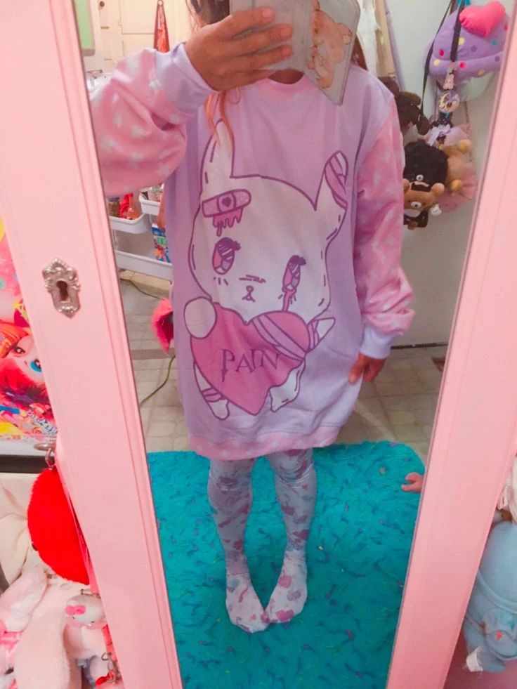
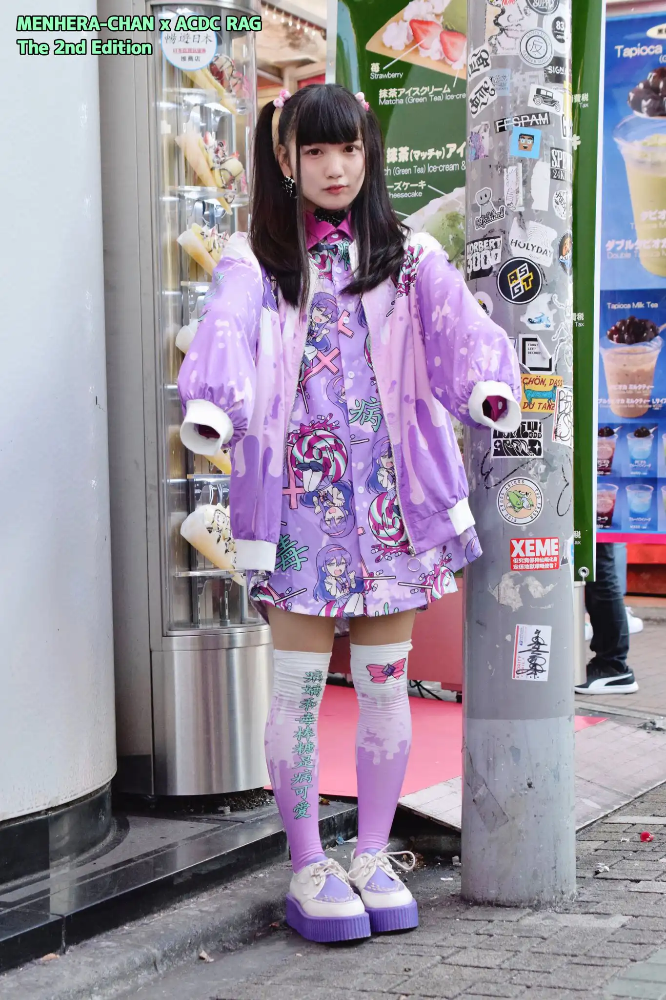
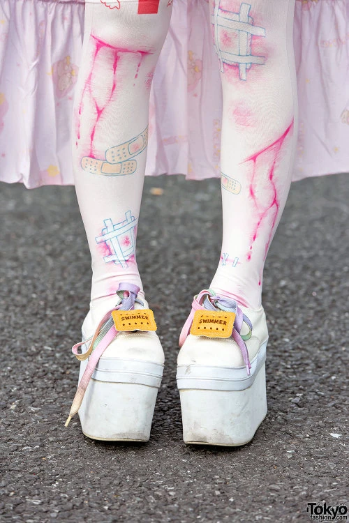
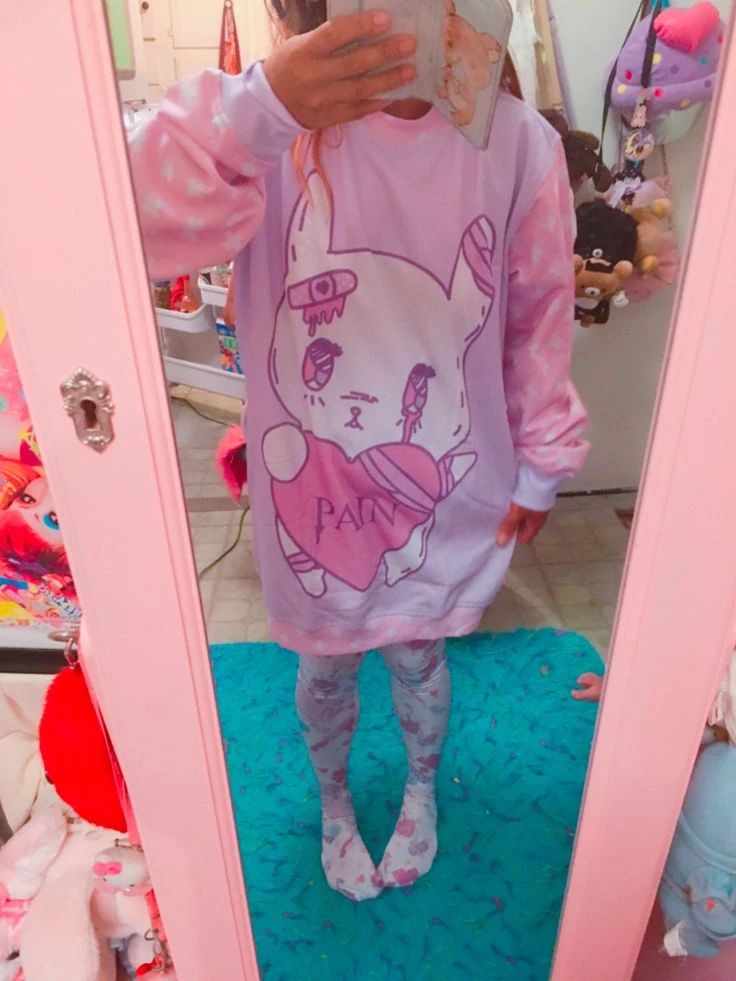
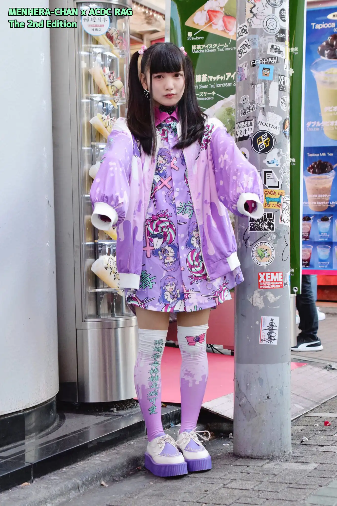
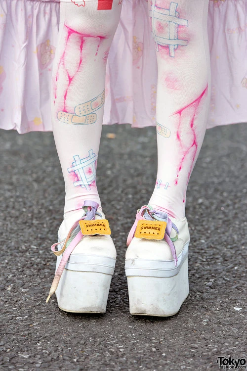

Yami Kawaii is a sickly cute fashion that was derived from Yume Kawaii with a strong emphasis on sickness motifs. It is part of Anti-Kawaii which adds opposing elements to typical kawaii style in order to leave a greater impact. As the word yami means both "sick" and "dark", it revolves around not only medical but also dark themes related to mental health. The color scheme of Yami Kawaii is the opposite to Yume Kawaii, with more dark colors dominating the style than its counterpart. Pastel colors, like light pink or baby blue, are also occasionally used but are often paired with black. The motifs of the clothing combine opposing things like cute looking text styles with depressive texts. For instance, a pastel pink shirt with bubble lettering will have a "yami" message, like “I want to die” or “Kill you." Images such as guns, pills referencing medication addictions, and other disturbing themes are common and have to be present in some form to make the outfit no longer simply kawaii, but Yami Kawaii.

yami kawaii
what's yami kawaii?

.jpeg)
characteristics
.jpeg)
.jpeg)
.jpeg) 





where to shop


yami kawaii interview